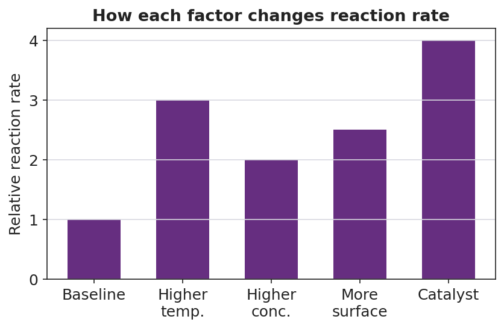

01 Phenomenon
Your teacher snaps two identical glow sticks at the same moment. One goes into a beaker of hot water; the other goes into a beaker of ice water. Within a minute, the hot one glows brighter. But by the end of class, the hot one has faded almost to nothing while the cold one is still glowing. Same glow stick, same chemicals — opposite results.
02 Driving question
Why does a glow stick glow brighter but for less time in hot water than in cold water — and what does that tell us about controlling how fast any reaction goes?
03 Notice & wonder
| I notice… | I wonder… |
|---|---|
Turn & Talk #1: The glow comes from particles reacting. If hot water makes the reaction faster, what do you think is physically happening to the particles in the hot stick compared to the cold stick? Try to describe the particles — not just say “it’s faster.”
04 Initial model
Before your teacher names anything, draw your best model of WHY heating speeds up a reaction. Draw the reacting particles in cold conditions and in hot conditions. Show how the particles move and how they meet.
| Cold conditions (slow) | Hot conditions (fast) |
|---|---|
Now list any OTHER change you think would make a reaction go faster (besides heating):
05 Investigate
Part 1 — Alka-Seltzer rate lab (goggles on)
You will run two sets of trials. In each set you change only one variable and keep everything else the same. Time each trial from drop-in until the fizzing stops. The reaction is:
3 NaHCO₃ + C₆H₈O₇ → 3 CO₂ + 3 H₂O + Na₃C₆H₅O₇
The CO₂ bubbling is your visible signal of how fast the reaction is going.
Trial Set 1 — change the TEMPERATURE (same whole tablet both times):
| Cup | Tablet form | Water temperature (°C) | Time to finish (s) |
|---|---|---|---|
| A | whole | (ice water) ____ | |
| B | whole | (hot water) ____ |
Which finished faster, A or B? __________
Trial Set 2 — change the SURFACE AREA (same temperature both times):
| Cup | Tablet form | Water temperature (°C) | Time to finish (s) |
|---|---|---|---|
| C | whole | (room temp) ____ | |
| D | crushed to powder | (room temp) ____ |
Which finished faster, C or D? __________
Part 2 — Make the pattern visible
In Trial Set 1, what was the ONE thing you changed? __________________________
In Trial Set 2, what was the ONE thing you changed? __________________________
In Trial Set 2, the crushed tablet and the whole tablet contain the same amount of the same chemicals. So what, exactly, made the crushed one react faster?
Part 3 — Reading the rate-factors chart
Look at figures/rate_factors_bar.png:

Which factor on the chart produces the largest increase in reaction rate? __________________________
Every bar except “Baseline” is taller than the baseline. In one sentence, what do all four factors have in common at the particle level?
06 Make it make sense
For each scenario, name the factor being changed, predict whether the rate goes up or down, and explain in terms of particle collisions. (These use the temperature and surface-area factors you tested in the lab — confirm your reasoning here.)
A whole effervescent tablet is dropped into warm water instead of cold water.
- Factor changed: _______________________________________________
- Rate goes (up / down): _______________
- In terms of collisions, why? _______________________________________________
A sugar cube takes a long time to dissolve and react, but the same mass of powdered sugar dissolves and reacts almost instantly (same temperature).
- Factor changed: _______________________________________________
- Rate goes (up / down): _______________
- In terms of collisions, why? _______________________________________________
The same reaction is run in ice water instead of room-temperature water.
- Factor changed: _______________________________________________
- Rate goes (up / down): _______________
- In terms of collisions, why? _______________________________________________
07 Key vocabulary
- collision theory
- the model that a chemical reaction occurs only when reactant particles collide with enough energy and the correct orientation; more frequent and more energetic collisions produce a faster reaction
- activation energy
- the minimum energy a colliding pair of particles must have for a reaction to occur; the height of the energy barrier on a reaction-coordinate diagram, measured from the reactants up to the peak. A catalyst speeds a reaction by lowering this barrier
- reaction rate
- how fast reactants are converted to products; a high rate means reactants are used up quickly (bright, short-lived glow stick), a low rate means the reaction proceeds slowly (dim, long-lived glow stick)
Use each term in a sentence about today’s phenomenon or lab. Do not copy the definition — describe something you actually observed or did.
collision theory: _______________________________________________ _______________________________________________
activation energy: _______________________________________________ _______________________________________________
reaction rate: _______________________________________________ _______________________________________________
08 Revise your model
Return to your Initial Model (the cold-vs-hot particle drawing). Improve it by adding:
Collision arrows showing particles hitting each other. Add MORE arrows on the hot side.
A label on the hot side: “more collisions / more energy per collision.”
A second pair of drawings comparing a whole tablet to a crushed tablet, showing where collisions can happen.
Then finish this Because / But / So sentence:
A crushed tablet reacts faster than a whole tablet at the same temperature because __________________________________________, but __________________________________________, so __________________________________________.
09 Exit ticket
(a) A campfire builder splits a log into thin kindling instead of burning the whole log. Using collision theory, explain why the kindling catches fire and burns faster.
(b) Refrigerating milk slows down the reactions that spoil it. In one sentence, explain why lowering the temperature slows those reactions, in terms of particle collisions.
(c) A catalyst speeds up a reaction without being used up. Which feature of the reaction does a catalyst change — the energy of the reactants, the activation-energy barrier, or the number of products? Explain in one sentence.
10 Explore further
- Alka-Seltzer rate investigation (core lab): Students time how long an Alka-Seltzer tablet takes to fully dissolve/react in water under two manipulated variables — temperature (ice water vs. room-temperature vs. hot water) and surface area (whole tablet vs. tablet crushed into powder). The reaction (citric acid + sodium bicarbonate → sodium citrate + water + CO₂ gas) produces visible bubbling, so "rate" is read directly from time-to-finish or from how fast gas is released. This is the hands-on backbone of the ACTIVE LEARNING strategy.
- Glow-stick rate demo (anchor): Two snapped glow sticks, one in hot water and one in ice water, observed across the period (brightness comparison at 1 min, 10 min, end of class). For a digital interactive option, a Javalab "collision model" or PhET "Reactions & Rates" simulation lets students raise temperature and concentration sliders and watch the collision frequency change on screen — useful as an Explore extension or for absent-student make-up.